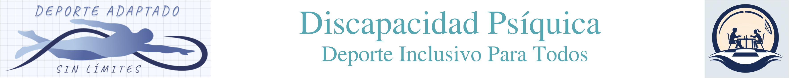

1. Medidas de Apoyo Legales
Análisis detallado de la guarda de hecho, la curatela y el defensor judicial tras la Reforma de la Ley 8/2021.

Análisis detallado de la guarda de hecho, la curatela y el defensor judicial tras la Reforma de la Ley 8/2021.
Para más información o consultas jurídicas, puedes visitar la web oficial del bufete autor:
Visitar Abogados Campos y Fdez.-Palacios